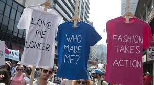

What is ECOFITS?

ECOFITS is an organisation that supports the idea of sustainability. People need to be educated on ways to save the environment and sustainable fashion is a good way to improve the environment for the future.
Here at ECOFITS we believe that sustainable fashion is the future, because lets be honest, if it isn't I don't think there will be a future to look out for.
Together we can insure that our children and future generations get to experience the beautiful things that nature has to offer.
This sustainable fashion website was created by Zainab Jardien. This is a real issue that everybody in our population has to try and fix.